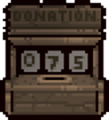
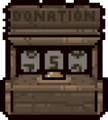
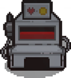

捐款机（又名bishi的黑洞）
捐款机是重生中新加入的机器，。往里面捐入一定数目的金钱就会解锁新的道具并且提升商店的等级。每次捐钱有几率使得捐款机堵塞，堵塞之后本局游戏无法再往里捐钱，下一局游戏才能继续往里面捐钱。
解锁道具列表：
10 个硬币–解锁蓝色地图（Blue Map），作用为显示隐藏房间
20 个硬币-将商店升级至Lv.1，出售商品数目+1
50 个硬币–解锁选项（There*s Options）
100 个硬币-将商店升级至Lv.2，出售商品数目+1
150 个硬币–解锁黑蜡烛（Black Candle）
200 个硬币-将商店升级至Lv.3，出售商品数目+1
400 个硬币–解锁红蜡烛（Red Candle）
600 个硬币-将商店升级至Lv.4，出售商品数目+1
900 个硬币–解锁蜡烛（Blue Candle）
999 个硬币–解锁秒表（Stopwatch ）
注意事项：
1.捐款机的捐款在历次游戏中会累加。
2.捐款有可能堵住捐款机，本局中不能再捐。
3.商店出现小Boss贪婪的时候不会出现捐款机。
4.赌博房里面也有可能出现捐款机。
5.用炸弹炸捐款机会出现数目不等的硬币，并且额外减少一定数目的钱。
6.如果在一局游戏中，如果炸了捐款机过多的次数，捐款机将会清零重置。但是不会重置已经解锁的道具和降低商店的等级。
7.用炸弹炸捐款机有小几率使得捐款机能够再次往里面捐钱。
8.捐款总数达到999之后再继续捐款的话捐款机会爆炸并且掉落大量10分铸币，下一次开始游戏的时候捐款数目会清零。
献血机
碰到献血机的时候玩家会减少红心数量，当红心不足的时候会减少魂心和黑心直至角色死亡，每次卖血之后会随机掉落一到三枚的任何类型的硬币。当拥有以撒的心脏(Isaac's Heart)这个道具的时候可以免费使用献血机。
每次卖血都有机会造成献血机爆炸，给一个输血袋(Blood Bag)或献血袋(IV Bag)。
玩家也可以用炸弹炸毁献血机。破坏献血机给你一个随机掉落红心或硬币，但是不会掉落献血代或者输血袋。
注意事项：
献血机会首先消耗永恒之心，然后是红心但是不会减少魂心和黑心，除非玩家的红心是在半心或以下，这时候会导致献血机扣除魂心和黑心。
玩家可以通过献血自杀。
从子宫层开始往后，每次献血会扣除一颗红心。
献血机可以使用塔罗牌“节制(XIV-Temperance)”从而在当前房间制造出来。
利用道具肩衣(Scapular)可以道具效果通过反复进♂出房间来无偿使用献血机。